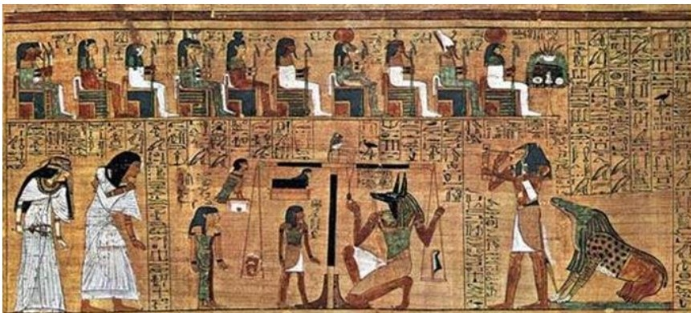
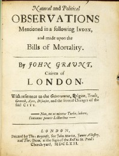
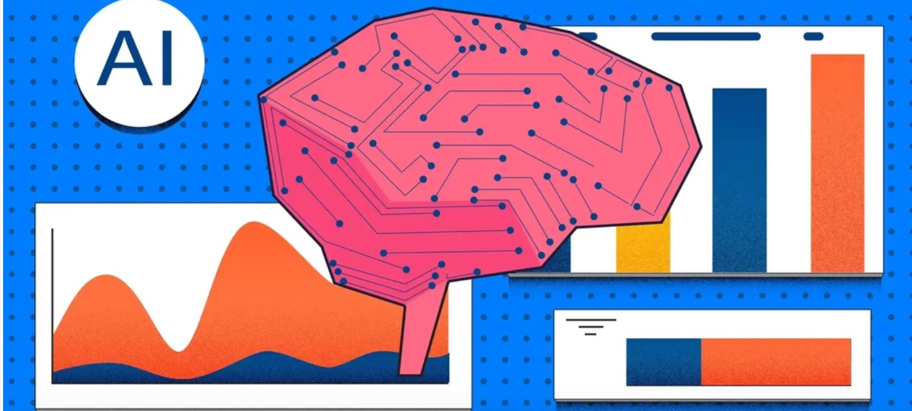
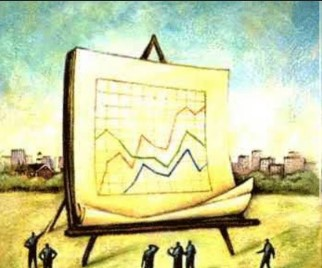
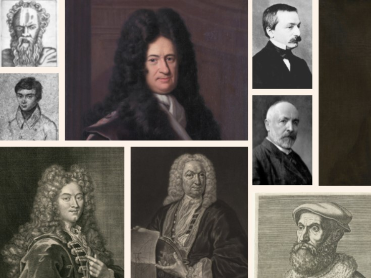

O termo "estatística" surgiu em 1752, sendo criado pelo professor alemão Gottfried Achenwall, que o associou à coleta de dados sobre os estados e suas populações. No entanto, a história da estatística é muito mais antiga do que o seu nome, sendo que por volta de 5000 A.C no Egito, os faraós já usavam dados para planejar colheitas e administrar o trabalho. Da mesma forma, há registros de mais de 2 milênios na China que se referem a levantamentos de dados estatísticos.

Vemos então que a estatística está presente na história da humanidade desde muito antes de seu conceito ser realmente definido. Suas origens estão ligadas à necessidade dos governos de coletar dados sobre a população e a economia. Isso se viu ainda mais presente durante o renascimento, quando o interesse por informações numéricas cresceu e a prática da coleta de dados passou a ser usada na administração pública.
Desde então, esse conceito continuou evoluindo, passando a ser usado também para tirar conclusões sobre a mortalidade no século XVII, com o comerciante inglês John Grant fundando o campo da demografia. Já no século XIX ocorreu outro ponto importante na história da estatística, com Sir Francis Galton e Karl Pearson sendo pioneiros no uso de métodos estatísticos para estudar características humanas, fundando a Escola Biométrica. Karl Pearson posteriormente passaria a ser conhecido como o pai da estatística moderna, ao lado de Ronald Fisher, que contribuiu com teorias importantes para a análise de experimentos no século XX.

Com o passar do tempo, a estatística se expandiu para diversas áreas, como a biologia, economia, sociologia e ciências naturais, tornando se então uma ferramenta essencial para a análise de dados e tomada de decisões. Atualmente, sua aplicação vai desde a administração de negócios até a análise de fenômenos naturais e sociais, considerando se como uma ciência essencial para o mundo moderno.
No século 21, a estatística desempenha um papel crucial em diversas áreas do conhecimento, impulsionada pela explosão de dados gerada pela era digital. Com o avanço da tecnologia e a capacidade de processar grandes volumes de informações, a estatística evoluiu para campos como Big Data, aprendizado de máquina e análise preditiva, sendo amplamente utilizada em negócios, ciências, saúde e ciências sociais. Métodos estatísticos avançados, como inferência Bayesiana e redes neurais, permitem a análise de dados complexos em tempo real, contribuindo para a tomada de decisões mais informadas e precisas. Além disso, a estatística está intimamente ligada à ciência de dados, um campo emergente que combina técnicas de computação e modelagem estatística para extrair insights valiosos de grandes bases de dados. A acessibilidade das ferramentas estatísticas e a demanda por análises rigorosas tornam a estatística uma disciplina essencial na sociedade contemporânea.


